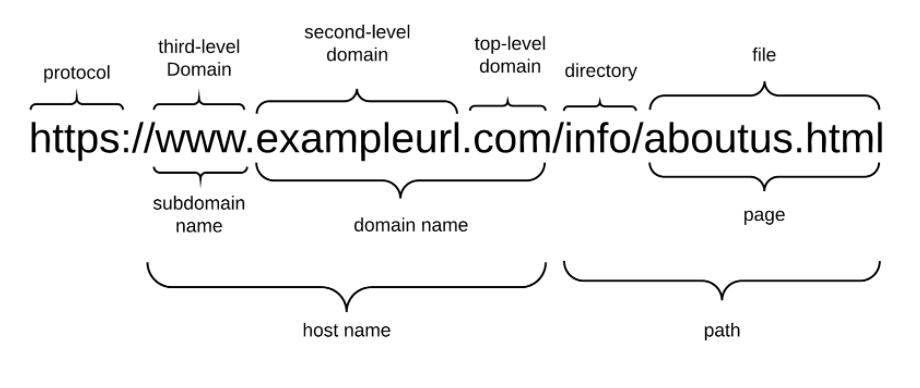

Uniform Resource Locator (URL)

A Uniform Resource Locator (URL) is the address used to access resources on the internet. It specifies the location of a web page, file, or resource and the protocol used to retrieve it.
A URL typically consists of several parts, including the protocol (http or https), domain name, and sometimes a path to a specific page or file.
For example, in https://www.example.com/page1, the URL directs the browser to the exact location of a resource on the World Wide Web.